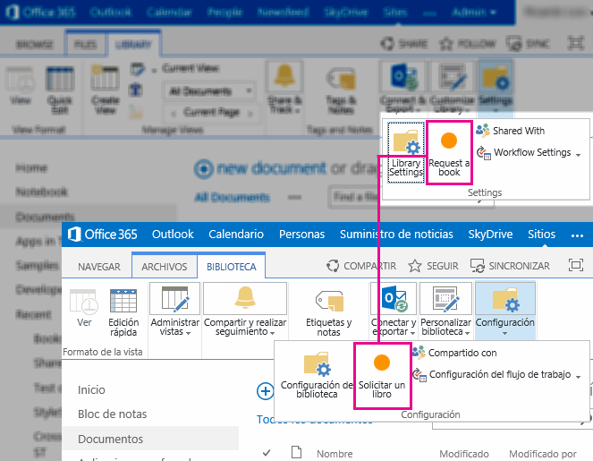
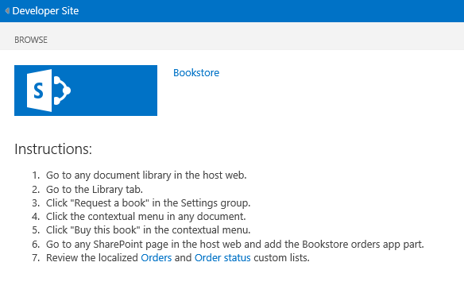

This sample includes a remote app that has webpages to handle the book request and book buying experiences in a simulated bookstore. Custom actions provide the link between the document library and the app pages. The cross-domain library provides data access from the remote app to the document library. The chrome control and SharePoint style sheet provide the classes to consistently style the app pages. A custom list provides storage for the orders placed by the end user. End users can use the provided app part to display the orders history.
The app can be installed in a SharePoint website provisioned in English (en-US) or Spanish (es-ES). The following app components are localized:
-
App title
-
Custom lists
-
SharePoint page
-
Custom actions
-
App part
-
App pages
-
Chrome control
Figure 1 shows the bookstore custom actions in English and Spanish.

Prerequisites
This sample requires the following:
-
Visual Studio 2012
-
Office Developer Tools for Visual Studio 2012
-
A SharePoint 2013 development environment configured for apps
Key components of the sample
The sample contains the following:
-
BookstoreApp project, which contains the following components:
-
Request a book custom action
-
But this book custom action
-
My orders app part
-
Orders custom list
-
Order status custom list
-
Home SharePoint page
-
App web resource files
-
Host web resource files
-
JavaScript resource files
-
AddRelsToAppPackage pre-deployment command-line program
-
-
BookstoreWeb project, which contains the following components:
-
BookOrders app page and JavaScript file
-
BookPurchase app page and JavaScript file
-
BookRequest app page and JavaScript file
-
ChromeLoader JavaScript file
-
Common JavaScript file
-
StyleLoader JavaScript file
-
Resource files
-
JavaScript resource files
-
Configure the sample
-
Update the SiteUrl property of the solution with the URL of the home page of your SharePoint website.
Run and test the sample
You can test the sample by deploying it to an English SharePoint website and to a Spanish SharePoint website.
-
Press F5 to build and deploy the app.
-
In the Grant permissions to the App page, click Trust It.
-
Follow the instructions on the SharePoint page.
Request a book by using the Ribbon custom action. Buy a book by using the ECB custom action.
Figure 2 shows the bookstore app start page.
Figure 2. Bookstore app start page

Troubleshooting
The following table lists common configuration and environment errors that prevent the sample from running or deploying properly, and how to solve them.
|
Problem |
Solution |
|---|---|
|
The app part does not display any content. The app part displays the following error: Navigation to the webpage was canceled. |
The browser blocked the content page. The solution might be different depending on the browser you are using:
|
Change log
|
Version |
Date |
|---|---|
|
First version |
July 16, 2012 |
|
Revised |
April 2013 |